Добро пожаловать, путешественник!
Главная
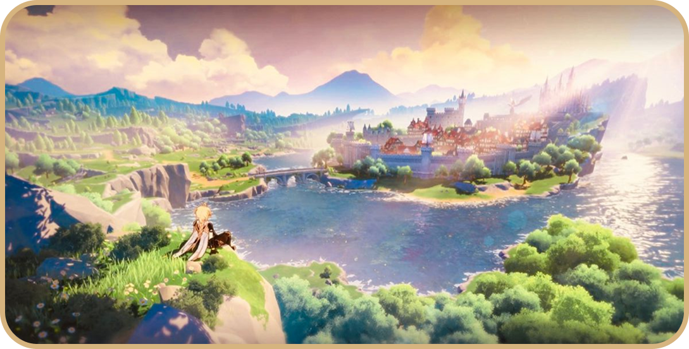
Персонажи
Ниже представлены только герои стандартного баннера.
А всех персонажей можно найти тут
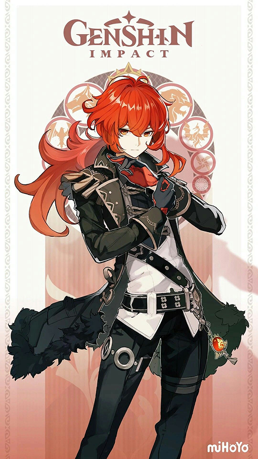
Дилюк- пяти звёздочный пиро двуручник. Благородный владелец винокурни “Рассвет”. Защищает Мондштат в тени ночи.
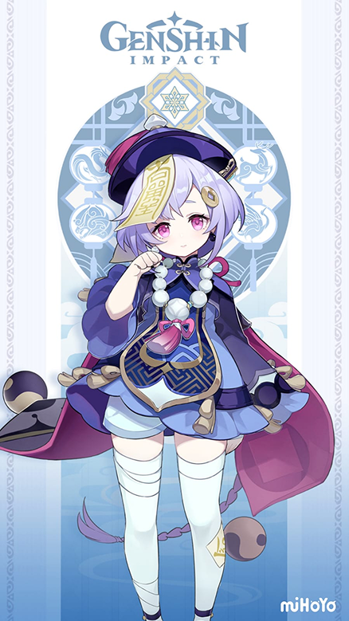
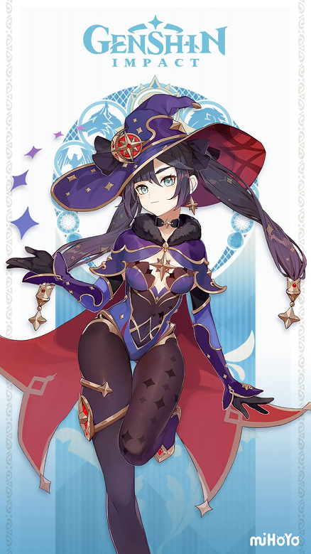
Ци Ци- пяти звёздочная крио мечница. Маленькая зомби-аптекарша, хранящая секрет вечной памяти
Мона- пяти звёздочная гидро катализатор. Загадочная астролог, читающая судьбы по звёздам.

Кэ Цин- пяти звёздочная электро мечница. Решительная Юй Хэн Цисин, верящая в силу людей, а не богов
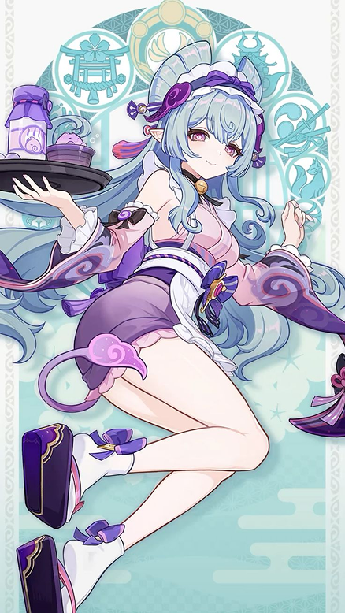
Мидзуки- пяти звёздочная анемо катализатор. Клинический психолог, чьё спокойствие скрывает бурю под поверхностью.
Регионы
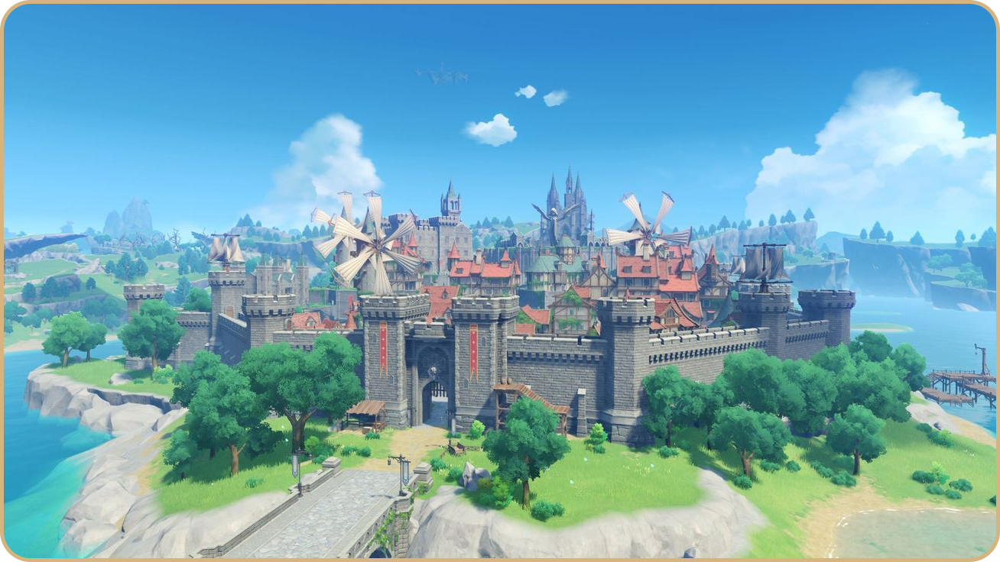
Мондштат - город свободы и ветра, где каждый живёт как подсказывает сердце.
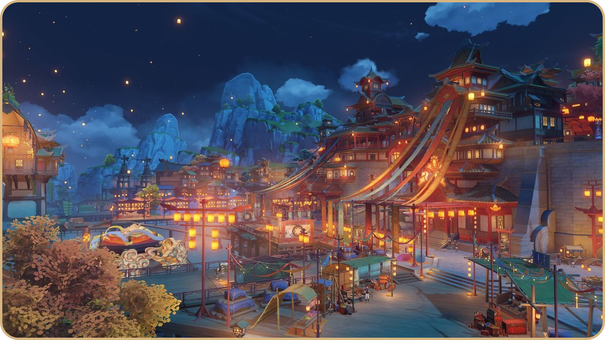
Ли Юэ - Страна камня и контрактов, хранящая древнюю мудрость адептов.
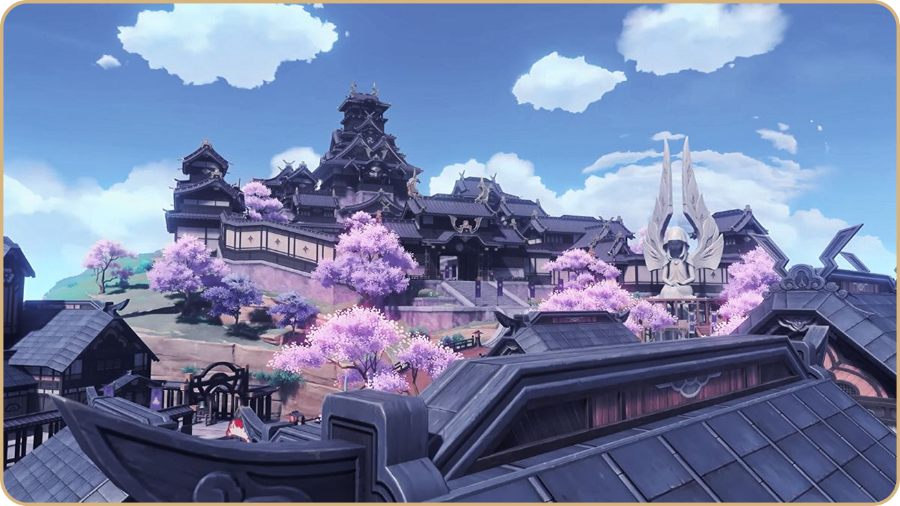
Инадзума - острова вечности, где молнии бьют во имя порядка.
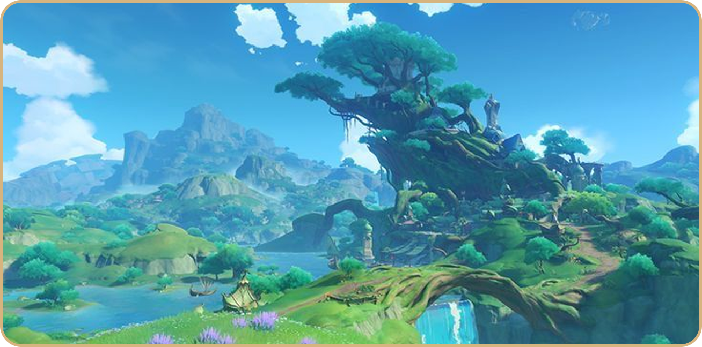
Сумеру - земля знаний, где каждый вопрос ищет свой ответ.
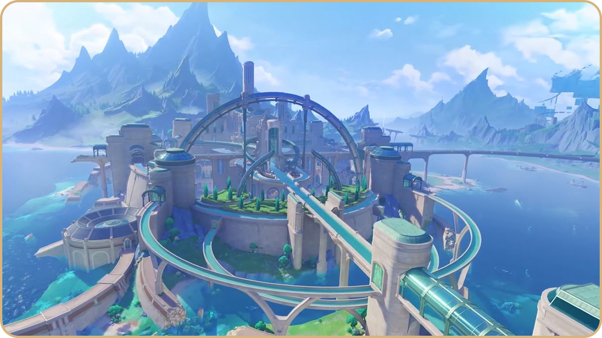
Фонтейн - город справедливости, скрывающий свою истину под водой.
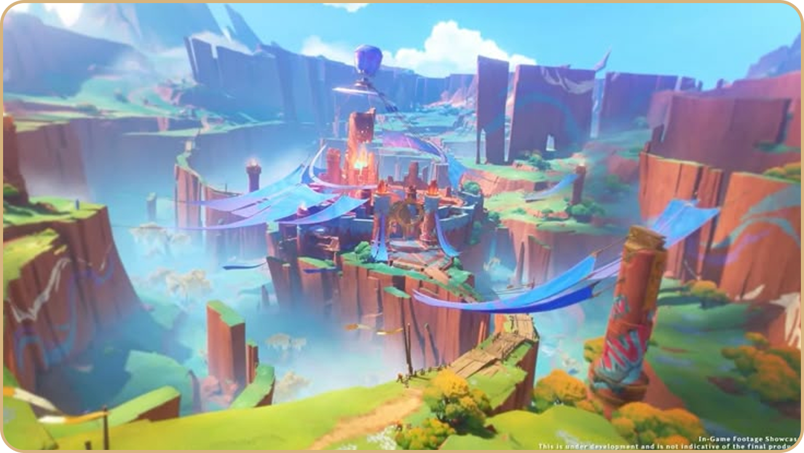
Натлан - земля пламени и страсти, где сила и свобода значат всё.

Нод-Край - мир грёз и потоков времени, где реальности и мечты переплетаются.
Элементы
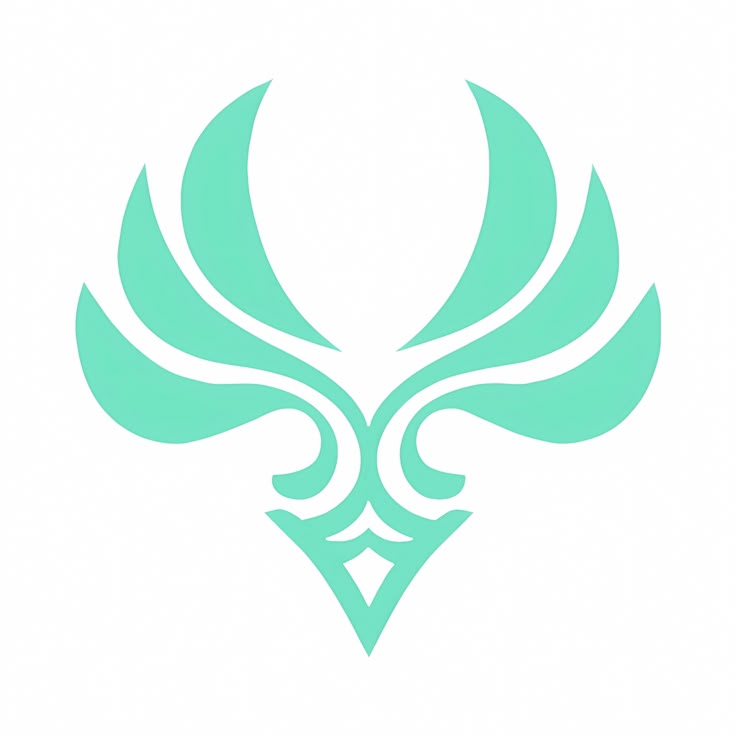
Анемо - ветер свободы и лёгкости.
Гео - сила камня и стойкости.
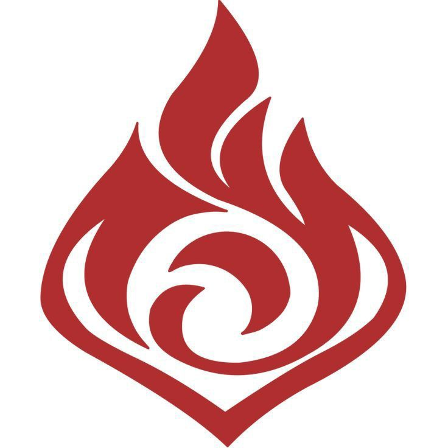
Пиро - пламя страсти и воли.
Гидро - вода, отражающая чувства.
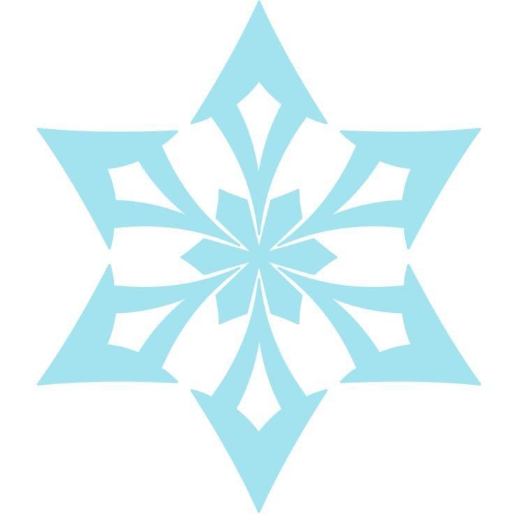
Крио - холод рассудка и покоя.
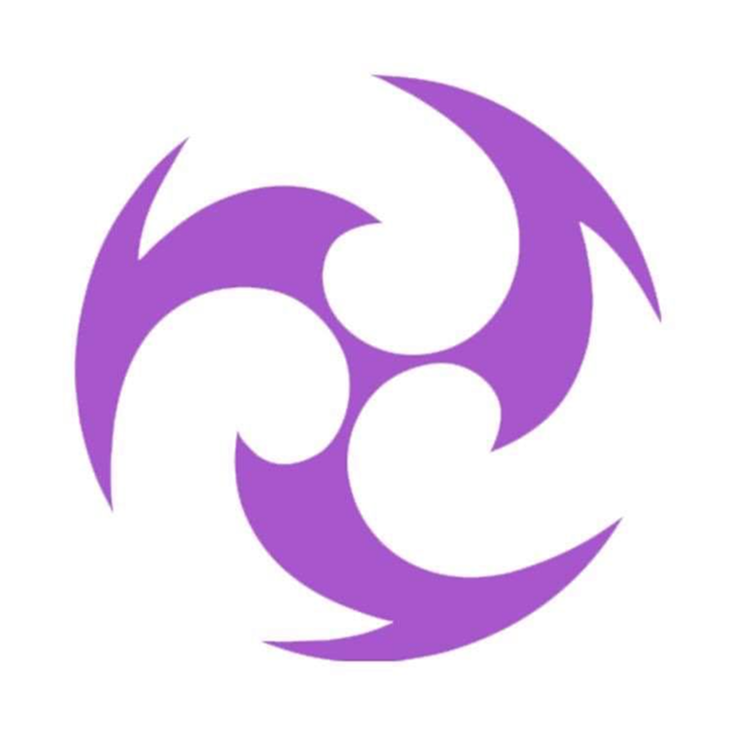
Электро - энергия перемен.
Дендро - рост, жизнь и знания
Гайды
- Гайды на всех персонажей
- Калькулятор материалов
- Интерактивная карта